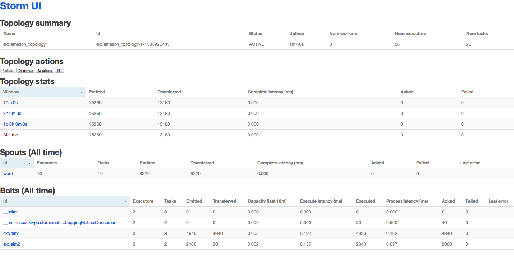
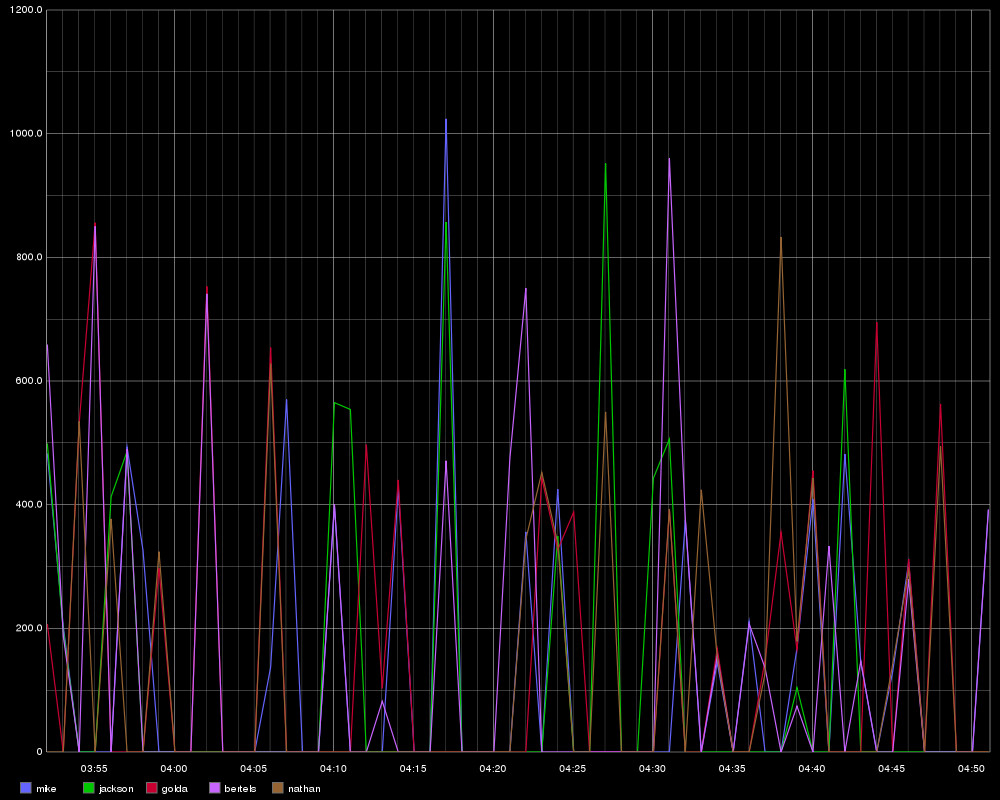

Storm Metrics How-To
by Jason Trost
If you have been following Storm’s updates over the past year, you may have noticed the metrics framework feature, added in version 0.9.0 New Storm metrics system PR. This provides nicer primitives built into Storm for collecting application specific metrics and reporting those metrics to external systems in a manageable and scalable way.
This blog post is a brief how to on using this system since the only examples of this system I’ve seen used are in the core storm code.
Concepts
Storm’s metrics framework mainly consists of two API additions: 1) Metrics, 2) Metrics Consumers.
Metric
An object initialized in a Storm bolt or spout (or Trident Function) that is used for instrumenting the respective bolt/spout for metric collection. This object must also be registered with Storm using the TopologyContext.registerMetric(…) function. Metrics must implement backtype.storm.metric.api.IMetric. Several useful Metric implementations exist. (Excerpt from the Storm Metrics wiki page with some extra notes added).
AssignableMetric — set the metric to the explicit value you supply. Useful if it’s an external value or in the case that you are already calculating the summary statistic yourself. Note: Useful for statsd Gauges.
CombinedMetric — generic interface for metrics that can be updated associatively.
CountMetric — a running total of the supplied values. Call incr() to increment by one,incrBy(n) to add/subtract the given number. Note: Useful for statsd counters.
MultiCountMetric — a hashmap of count metrics. Note: Useful for many Counters where you may not know the name of the metric a priori or where creating many Counters manually is burdensome.
MeanReducer — an implementation of ReducedMetric that tracks a running average of values given to its reduce() method. (It accepts Double, Integer or Long values, and maintains the internal average as a Double.) Despite his reputation, the MeanReducer is actually a pretty nice guy in person.
Metrics Consumer
An object meant to process/report/log/etc output from Metric objects (represented as DataPoint objects) for all the various places these Metric objects were registered, also providing useful metadata about where the metric was collected such as worker host, worker port, componentID (bolt/spout name), taskID, timestamp, and updateInterval (all represented as TaskInfo objects). MetricConsumers are registered in the storm topology configuration (usingbacktype.storm.Config.registerMetricsConsumer(…)) or in Storm’s system config (Under the config name topology.metrics.consumer.register). Metrics Consumers must implement backtype.storm.metric.api.IMetricsConsumer.
Example Usage
To demonstrate how to use the new metrics framework, I will walk through some changes I made to the ExclamationTopology included in storm-starter. These changes will allow us to collect some metrics including:
- A simple count of how many times the execute() method was called per time period (5 sec in this example).
- A count of how many times an individual word was encountered per time period (1 minute in this example).
- The mean length of all words encountered per time period (1 minute in this example).
Adding Metrics to the ExclamationBolt
Add three new member variables to ExclamationBolt. Notice there are all declared as transient. This is needed because none of these Metrics are Serializable and all non-transient variables in Storm bolts and spouts must be Serializable.
transient CountMetric _countMetric;
transient MultiCountMetric _wordCountMetric;
transient ReducedMetric _wordLengthMeanMetric;
Initialize and register these Metrics in the Bolt’s prepare method. Metrics can only be registered in the prepare method of bolts or the open method of spouts. Otherwise an exception is thrown. The registerMetric takes three arguments: 1) metric name, 2) metric object, and 3) time bucket size in seconds. The “time bucket size in seconds” controls how often the metrics are sent to the Metrics Consumer.
@Override
public void prepare(Map conf, TopologyContext context, OutputCollector collector) {
_collector = collector;
initMetrics(context);
}
void initMetrics(TopologyContext context)
{
_countMetric = new CountMetric();
_wordCountMetric = new MultiCountMetric();
_wordLengthMeanMetric = new ReducedMetric(new MeanReducer());
context.registerMetric("execute_count", _countMetric, 5);
context.registerMetric("word_count", _wordCountMetric, 60);
context.registerMetric("word_length", _wordLengthMeanMetric, 60);
}
Actually increment/update the metrics in the bolt’s execute method. In this example we are just:
- incrementing a counter every time we handle a word.
- incrementing a counter for each specific word encountered.
- updating the mean length of word we encountered.
@Override
public void execute(Tuple tuple) {
_collector.emit(tuple, new Values(tuple.getString(0) + "!!!"));
_collector.ack(tuple);
updateMetrics(tuple.getString(0));
}
void updateMetrics(String word)
{
_countMetric.incr();
_wordCountMetric.scope(word).incr();
_wordLengthMeanMetric.update(word.length());
}
Collecting/Reporting Metrics
Lastly, we need to enable a Metric Consumer in order to collect and process these metrics. The Metric Consumer is meant to be the interface between the Storm metrics framework and some external system (such as Statsd, Riemann, etc). In this example, we are just going to log the metrics using Storm’s built-in LoggingMetricsConsumer. This is accomplished by registering the Metrics Consumer when defining the Storm topology. In this example, we are registering the metrics consumer with a parallelism hint of 2. Here is the line we need to add when defining the topology.
conf.registerMetricsConsumer(LoggingMetricsConsumer.class, 2);
Here is the full code for defining the toplogy:
TopologyBuilder builder = new TopologyBuilder();
builder.setSpout("word", new TestWordSpout(), 10);
builder.setBolt("exclaim1", new ExclamationBolt(), 3)
.shuffleGrouping("word");
builder.setBolt("exclaim2", new ExclamationBolt(), 2)
.shuffleGrouping("exclaim1");
Config conf = new Config();
conf.setDebug(true);
conf.registerMetricsConsumer(LoggingMetricsConsumer.class, 2);
if (args != null && args.length > 0) {
conf.setNumWorkers(3);
StormSubmitter.submitTopology(args[0], conf, builder.createTopology());
}
else {
LocalCluster cluster = new LocalCluster();
cluster.submitTopology("test", conf, builder.createTopology());
Utils.sleep(5*60*1000L);
cluster.killTopology("test");
cluster.shutdown();
}
After running this topology, you should see log entries in $STORM_HOME/logs/metrics.logthat look like this.
<pre>2014-01-05 09:25:34,809 5479318 1388931931 localhost:6702 9:exclaim2 execute_count 196
2014-01-05 09:25:49,806 5494315 1388931949 localhost:6703 8:exclaim1 execute_count 28
2014-01-05 09:25:59,812 5504321 1388931959 localhost:6703 8:exclaim1 execute_count 34
2014-01-05 09:25:59,812 5504321 1388931946 localhost:6702 6:exclaim1 execute_count 29
2014-01-05 09:25:59,825 5504334 1388931951 localhost:6702 9:exclaim2 execute_count 989
2014-01-05 09:25:59,831 5504340 1388931957 localhost:6704 7:exclaim1 execute_count 656
2014-01-05 09:26:29,821 5534330 1388931977 localhost:6704 7:exclaim1 word_count {bertels=435, jackson=402, nathan=405, mike=414, golda=451}
2014-01-05 09:26:29,821 5534330 1388931977 localhost:6704 7:exclaim1 word_length 5.790223065970574
2014-01-05 09:26:29,822 5534331 1388931982 localhost:6704 10:exclaim2 word_count {bertels!!!=920, golda!!!=919, jackson!!!=902, nathan!!!=907, mike!!!=921}
2014-01-05 09:26:29,823 5534332 1388931982 localhost:6704 10:exclaim2 word_length 8.794484569927775
2014-01-05 09:26:29,823 5534332 1388931986 localhost:6702 9:exclaim2 word_count {bertels!!!=737, golda!!!=751, jackson!!!=766, nathan!!!=763, mike!!!=715}
2014-01-05 09:26:29,823 5534332 1388931986 localhost:6702 9:exclaim2 word_length 8.818327974276528
2014-01-05 09:26:31,777 5536286 1388931991 localhost:6702 6:exclaim1 word_count {bertels=529, jackson=517, nathan=503, mike=498, golda=511}
2014-01-05 09:26:31,777 5536286 1388931991 localhost:6702 6:exclaim1 word_length 5.819781078967944
2014-01-05 09:26:32,454 5536963 1388931992 localhost:6704 10:exclaim2 execute_count 14
2014-01-05 09:26:49,829 5554338 1388932009 localhost:6703 8:exclaim1 execute_count 76</pre>
You should also see the LoggingMetricsConsumer show up as a Bolt in the Storm web UI, like this (After clicking the “Show System Stats” button at the bottom of the page):

Summary
-
We instrumented the ExclamationBolt to collect some simple metrics. We accomplished this by initializing and registering the metrics in the Bolt’s prepare method and then by incrementing/updating the metrics in the bolt’s execute method.
-
We had the metrics framework simply log all the metrics that were gathered using the built-in LoggingMetricsConsumer. The full code is here as well as posted below. A diff between the original ExclamationTopology and mine is here.
In a future post I hope to present a Statsd Metrics Consumer that I am working on to allow for easy collection of metrics in statsd and then visualization in graphite, like this.

package storm.starter;
import backtype.storm.Config;
import backtype.storm.LocalCluster;
import backtype.storm.StormSubmitter;
import backtype.storm.metric.LoggingMetricsConsumer;
import backtype.storm.metric.api.CountMetric;
import backtype.storm.metric.api.MeanReducer;
import backtype.storm.metric.api.MultiCountMetric;
import backtype.storm.metric.api.ReducedMetric;
import backtype.storm.task.OutputCollector;
import backtype.storm.task.TopologyContext;
import backtype.storm.testing.TestWordSpout;
import backtype.storm.topology.OutputFieldsDeclarer;
import backtype.storm.topology.TopologyBuilder;
import backtype.storm.topology.base.BaseRichBolt;
import backtype.storm.tuple.Fields;
import backtype.storm.tuple.Tuple;
import backtype.storm.tuple.Values;
import backtype.storm.utils.Utils;
import java.util.Map;
/**
* This is a basic example of a Storm topology.
*/
public class ExclamationTopology {
public static class ExclamationBolt extends BaseRichBolt {
OutputCollector _collector;
// Metrics
// Note: these must be declared as transient since they are not Serializable
transient CountMetric _countMetric;
transient MultiCountMetric _wordCountMetric;
transient ReducedMetric _wordLengthMeanMetric;
@Override
public void prepare(Map conf, TopologyContext context, OutputCollector collector) {
_collector = collector;
// Metrics must be initialized and registered in the prepare() method for bolts,
// or the open() method for spouts. Otherwise, an Exception will be thrown
initMetrics(context);
}
void initMetrics(TopologyContext context)
{
_countMetric = new CountMetric();
_wordCountMetric = new MultiCountMetric();
_wordLengthMeanMetric = new ReducedMetric(new MeanReducer());
context.registerMetric("execute_count", _countMetric, 5);
context.registerMetric("word_count", _wordCountMetric, 60);
context.registerMetric("word_length", _wordLengthMeanMetric, 60);
}
@Override
public void execute(Tuple tuple) {
_collector.emit(tuple, new Values(tuple.getString(0) + "!!!"));
_collector.ack(tuple);
updateMetrics(tuple.getString(0));
}
void updateMetrics(String word)
{
_countMetric.incr();
_wordCountMetric.scope(word).incr();
_wordLengthMeanMetric.update(word.length());
}
@Override
public void declareOutputFields(OutputFieldsDeclarer declarer) {
declarer.declare(new Fields("word"));
}
}
public static void main(String[] args) throws Exception {
TopologyBuilder builder = new TopologyBuilder();
builder.setSpout("word", new TestWordSpout(), 10);
builder.setBolt("exclaim1", new ExclamationBolt(), 3).shuffleGrouping("word");
builder.setBolt("exclaim2", new ExclamationBolt(), 2).shuffleGrouping("exclaim1");
Config conf = new Config();
conf.setDebug(true);
// This will simply log all Metrics received into $STORM_HOME/logs/metrics.log on one or more worker nodes.
conf.registerMetricsConsumer(LoggingMetricsConsumer.class, 2);
if (args != null && args.length > 0) {
conf.setNumWorkers(3);
StormSubmitter.submitTopology(args[0], conf, builder.createTopology());
}
else {
LocalCluster cluster = new LocalCluster();
cluster.submitTopology("test", conf, builder.createTopology());
Utils.sleep(5*60*1000L);
cluster.killTopology("test");
cluster.shutdown();
}
}
}